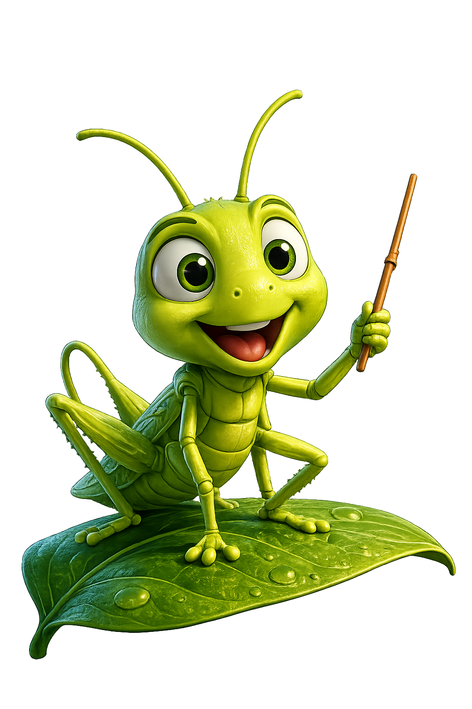
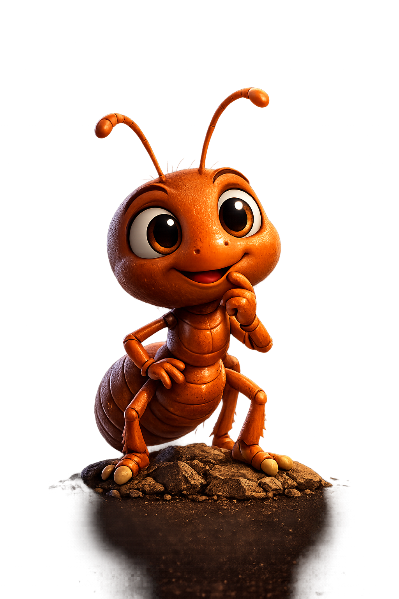
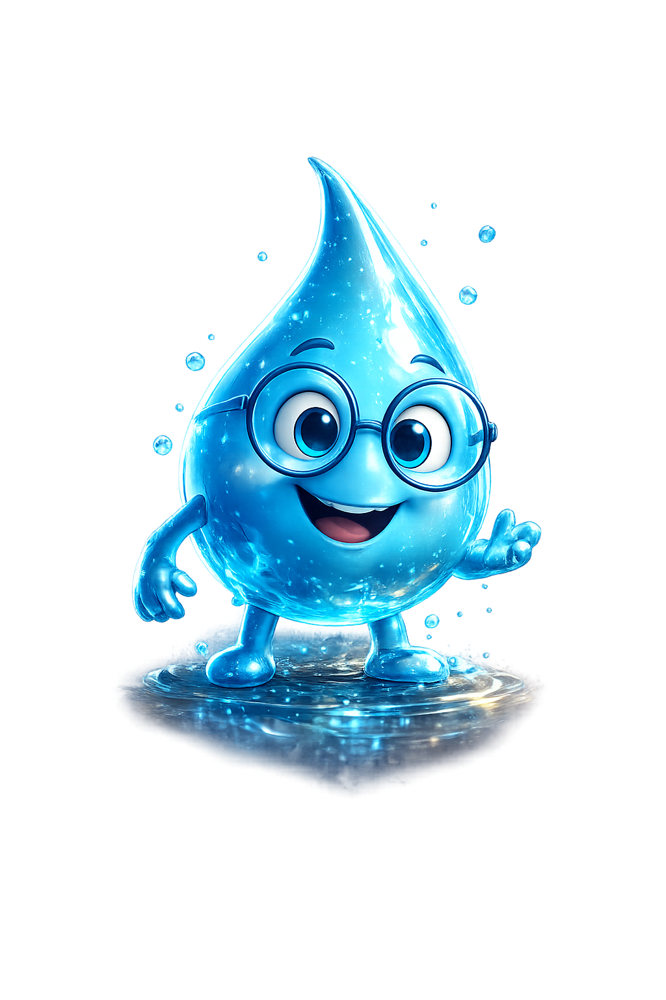

What makes life one—and endlessly different?
Water · nucleic acids · cells · diversity · evolution
IB DP BIOLOGY · SL + HL · FIRST ASSESSMENT 2025
Travel from molecules to the biosphere. Discover how structure, function, interaction and transformation connect every level of life.
THE COMPLETE MAP
The IB Biology course is organized through themes and levels of organization. SIGMA turns that framework into a navigable learning universe.
Water · nucleic acids · cells · diversity · evolution
Membranes · organelles · specialization · transport
Enzymes · signalling · defence · ecosystems
Replication · inheritance · homeostasis · evolution
SEASON I · THE ORIGIN OF LIFE
Before a cell can live, life needs a language: atoms form molecules, molecules store information, and interactions create an organized system capable of continuity and change.
ARC 01 JOURNEY
Each episode unlocks one essential idea, then connects it to the larger system of life.
Find the boundary between matter and a living system.
START EPISODE →See how polarity makes life’s chemistry possible.
COMING NEXTDiscover the architecture behind biological diversity.
LOCKEDConnect monomers, polymers, structure and function.
LOCKEDExplain why life must continuously transform energy.
LOCKEDFollow biological information from storage to expression.
LOCKEDUnderstand why membranes make cellular life possible.
LOCKEDAssemble the molecular system into the first complete model of life.
LOCKEDONE ARC · COMPLETE MASTERY
An ARC is complete only when understanding transfers to evidence, practical work and assessment.

Cricketopens discovery with “Why?”
Little Antreasons step by step with “How?”
Sigma Waterclarifies, connects and memory-locksARC 01 · EPISODE 01
What separates a living cell from a collection of molecules?
Begin the discovery →